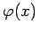
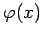
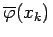

Inhalt Index DeskTop Bronstein

 Lineare Integralgleichungen Fredholmsche Integralgleichungen 2. Art Numerische Verfahren für Fredholmsche Integralgleichungen 2. Art Approximation des Integrals
Lineare Integralgleichungen Fredholmsche Integralgleichungen 2. Art Numerische Verfahren für Fredholmsche Integralgleichungen 2. Art Approximation des Integrals


Zur Bearbeitung der Integralgleichung (11.23) wird das Integral durch einen Näherungsausdruck ersetzt. Derartige Näherungen bezeichnet man als Quadraturformeln. Sie haben die Form
d.h., anstelle des Integrals steht eine Summe mit Zahlen  gewichteter Funktionswerte an den Stützstellen . Die
gewichteter Funktionswerte an den Stützstellen . Die  sind dabei (unabhängig von f) geeignet gewählt. Damit kann (11.23) näherungsweise geschrieben werden:
sind dabei (unabhängig von f) geeignet gewählt. Damit kann (11.23) näherungsweise geschrieben werden:
 |
(11.25a) |
Die Quadraturformel hängt dabei noch von der Variablen x ab. Der Punkt im Argument der Funktion deutet an, daß die Quadraturformel bezüglich der unabhängigen Variablen y angewendet worden ist. Man geht über zur Gleichung
Die Funktion  bildet eine Approximation für die exakte Lösung . Man bezeichnet (11.25b) als ein semidiskretes Problem, da bezüglich der Variablen y zu diskreten Werten übergegangen wurde, während die Variable x noch beliebig wählbar ist.
bildet eine Approximation für die exakte Lösung . Man bezeichnet (11.25b) als ein semidiskretes Problem, da bezüglich der Variablen y zu diskreten Werten übergegangen wurde, während die Variable x noch beliebig wählbar ist.
Wenn für eine Funktion  die Gleichung (11.25b) für alle gilt, ist diese natürlich auch an den Stützstellen x=xk erfüllt:
die Gleichung (11.25b) für alle gilt, ist diese natürlich auch an den Stützstellen x=xk erfüllt:
Dies ist ein lineares Gleichungssystem, bestehend aus n Gleichungen für die n Unbekannten . Durch Einsetzen dieser Lösungswerte in (11.25b) ist die Lösung des semidiskreten Problems gegeben. Die Genauigkeit und der Rechenaufwand dieses Verfahrens hängen von der Güte der Quadraturformel ab. Benutzt man z.B. die linksseitige Rechteckformel mit äquidistanten Stützstellen
:
so erhält das System (11.25c) unter Verwendung der Bezeichnungen
die Form:
Genau dieses System wurde schon bei der Untersuchung der FREDHOLMschen Lösungsmethode hergeleitet. Da die linksseitige Rechteckformel aber nicht sehr genau ist, müssen für eine gute Approximation des Integrals eine große Anzahl von Stützstellen einbezogen werden, wodurch die Dimension des Gleichungssystems wächst. Es empfiehlt sich daher, geeignetere Quadraturformeln heranzuziehen.